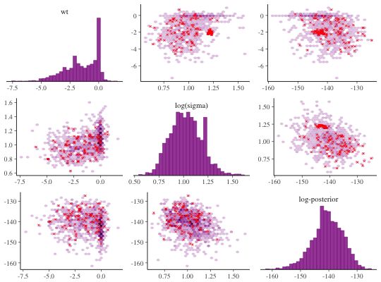
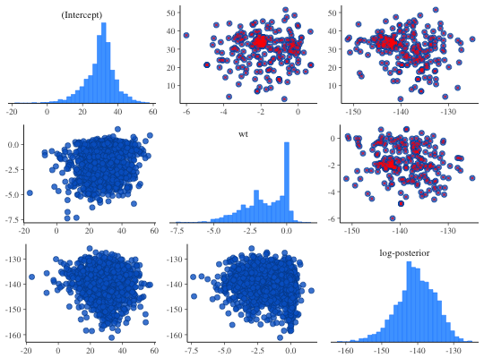
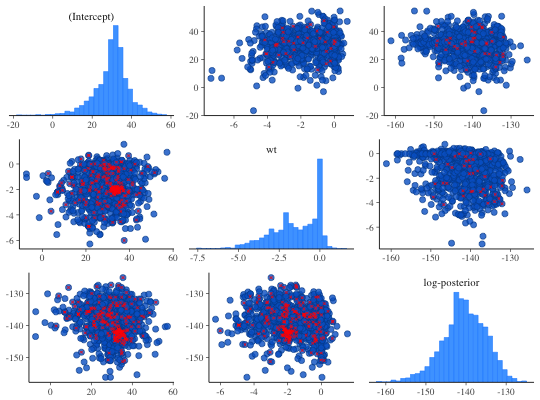

Pairs method for stanreg objects
Interface to bayesplot's mcmc_pairs function
for use with rstanarm models. Be careful not to specify too
many parameters to include or the plot will be both hard to read and slow to
render.
# S3 method for stanreg pairs(x, pars = NULL, regex_pars = NULL, ...)
Arguments
| x | A fitted model object returned by one of the
rstanarm modeling functions. See |
|---|---|
| pars | An optional character vetor of parameter names. All parameters are included by default, but for models with more than just a few parameters it may be far too many to visualize on a small computer screen and also may require substantial computing time. |
| regex_pars | An optional character vector of regular
expressions to use for parameter selection. |
| ... | Optional arguments passed to |
Details
By default, the mcmc_pairs function in the bayesplot package
plots some of the Markov chains (half, in the case of an even number of
chains) in the panels above the diagonal and the other half in the panels
below the diagonal. This can be changed using the condition argument
along with the pairs_condition helper function.
We provide an example in the Examples section, below, but
for full details see the mcmc_pairs help page.
In particular, if when you fit your model rstanarm issues warnings
about convergence, divergent transitions, or transitions hitting the maximum
treedepth, then it can sometimes be useful to use one of the NUTS sampler
parameters/diagnostics for condition. The last few examples below
demonstrate this feature.
Examples
if (!exists("example_model")) example(example_model)#> Warning: no help found for ‘example_model’bayesplot::color_scheme_set("purple") pairs(example_model, pars = c("(Intercept)", "log-posterior"))#> Error in pairs(example_model, pars = c("(Intercept)", "log-posterior")): object 'example_model' not foundpairs( example_model, regex_pars = "herd:[2,7,9]", diag_fun = "dens", off_diag_fun = "hex" )#> Error in pairs(example_model, regex_pars = "herd:[2,7,9]", diag_fun = "dens", off_diag_fun = "hex"): object 'example_model' not found# for demonstration purposes, intentionally fit a model that # will (almost certainly) have some divergences fit <- stan_glm( mpg ~ ., data = mtcars, iter = 1000, # this combo of prior and adapt_delta should lead to some divergences prior = hs(), adapt_delta = 0.9 )#> #> SAMPLING FOR MODEL 'continuous' NOW (CHAIN 1). #> #> Chain 1, Iteration: 1 / 1000 [ 0%] (Warmup) #> Chain 1, Iteration: 100 / 1000 [ 10%] (Warmup) #> Chain 1, Iteration: 200 / 1000 [ 20%] (Warmup) #> Chain 1, Iteration: 300 / 1000 [ 30%] (Warmup) #> Chain 1, Iteration: 400 / 1000 [ 40%] (Warmup) #> Chain 1, Iteration: 500 / 1000 [ 50%] (Warmup) #> Chain 1, Iteration: 501 / 1000 [ 50%] (Sampling) #> Chain 1, Iteration: 600 / 1000 [ 60%] (Sampling) #> Chain 1, Iteration: 700 / 1000 [ 70%] (Sampling) #> Chain 1, Iteration: 800 / 1000 [ 80%] (Sampling) #> Chain 1, Iteration: 900 / 1000 [ 90%] (Sampling) #> Chain 1, Iteration: 1000 / 1000 [100%] (Sampling) #> Elapsed Time: 2.84858 seconds (Warm-up) #> 1.00898 seconds (Sampling) #> 3.85756 seconds (Total) #> #> #> SAMPLING FOR MODEL 'continuous' NOW (CHAIN 2). #> #> Chain 2, Iteration: 1 / 1000 [ 0%] (Warmup) #> Chain 2, Iteration: 100 / 1000 [ 10%] (Warmup) #> Chain 2, Iteration: 200 / 1000 [ 20%] (Warmup) #> Chain 2, Iteration: 300 / 1000 [ 30%] (Warmup) #> Chain 2, Iteration: 400 / 1000 [ 40%] (Warmup) #> Chain 2, Iteration: 500 / 1000 [ 50%] (Warmup) #> Chain 2, Iteration: 501 / 1000 [ 50%] (Sampling) #> Chain 2, Iteration: 600 / 1000 [ 60%] (Sampling) #> Chain 2, Iteration: 700 / 1000 [ 70%] (Sampling) #> Chain 2, Iteration: 800 / 1000 [ 80%] (Sampling) #> Chain 2, Iteration: 900 / 1000 [ 90%] (Sampling) #> Chain 2, Iteration: 1000 / 1000 [100%] (Sampling) #> Elapsed Time: 2.08817 seconds (Warm-up) #> 1.67026 seconds (Sampling) #> 3.75842 seconds (Total) #> #> #> SAMPLING FOR MODEL 'continuous' NOW (CHAIN 3). #> #> Chain 3, Iteration: 1 / 1000 [ 0%] (Warmup) #> Chain 3, Iteration: 100 / 1000 [ 10%] (Warmup) #> Chain 3, Iteration: 200 / 1000 [ 20%] (Warmup) #> Chain 3, Iteration: 300 / 1000 [ 30%] (Warmup) #> Chain 3, Iteration: 400 / 1000 [ 40%] (Warmup) #> Chain 3, Iteration: 500 / 1000 [ 50%] (Warmup) #> Chain 3, Iteration: 501 / 1000 [ 50%] (Sampling) #> Chain 3, Iteration: 600 / 1000 [ 60%] (Sampling) #> Chain 3, Iteration: 700 / 1000 [ 70%] (Sampling) #> Chain 3, Iteration: 800 / 1000 [ 80%] (Sampling) #> Chain 3, Iteration: 900 / 1000 [ 90%] (Sampling) #> Chain 3, Iteration: 1000 / 1000 [100%] (Sampling) #> Elapsed Time: 1.93254 seconds (Warm-up) #> 1.54725 seconds (Sampling) #> 3.47979 seconds (Total) #> #> #> SAMPLING FOR MODEL 'continuous' NOW (CHAIN 4). #> #> Chain 4, Iteration: 1 / 1000 [ 0%] (Warmup) #> Chain 4, Iteration: 100 / 1000 [ 10%] (Warmup) #> Chain 4, Iteration: 200 / 1000 [ 20%] (Warmup) #> Chain 4, Iteration: 300 / 1000 [ 30%] (Warmup) #> Chain 4, Iteration: 400 / 1000 [ 40%] (Warmup) #> Chain 4, Iteration: 500 / 1000 [ 50%] (Warmup) #> Chain 4, Iteration: 501 / 1000 [ 50%] (Sampling) #> Chain 4, Iteration: 600 / 1000 [ 60%] (Sampling) #> Chain 4, Iteration: 700 / 1000 [ 70%] (Sampling) #> Chain 4, Iteration: 800 / 1000 [ 80%] (Sampling) #> Chain 4, Iteration: 900 / 1000 [ 90%] (Sampling) #> Chain 4, Iteration: 1000 / 1000 [100%] (Sampling) #> Elapsed Time: 2.09995 seconds (Warm-up) #> 1.30974 seconds (Sampling) #> 3.40969 seconds (Total) #>#> Warning: There were 283 divergent transitions after warmup. Increasing adapt_delta above 0.9 may help. See #> http://mc-stan.org/misc/warnings.html#divergent-transitions-after-warmup#> Warning: Examine the pairs() plot to diagnose sampling problemspairs( fit, pars = c("wt", "sigma", "log-posterior"), transformations = list(sigma = "log"), # show log(sigma) instead of sigma off_diag_fun = "hex" # use hexagonal heatmaps instead of scatterplots )bayesplot::color_scheme_set("brightblue") pairs( fit, pars = c("(Intercept)", "wt", "sigma", "log-posterior"), transformations = list(sigma = "log"), off_diag_args = list(size = 3/4, alpha = 1/3), # size and transparency of scatterplot points np_style = pairs_style_np(div_color = "black", div_shape = 2) # color and shape of the divergences )# Using the condition argument to show divergences above the diagonal pairs( fit, pars = c("(Intercept)", "wt", "log-posterior"), condition = pairs_condition(nuts = "divergent__") )# Using the condition argument to divide iterations by whether NUTS # accept_stat__ is at least the median accept_stat__ (above diagonal) or less # than the median accept_stat__ (below diagonal). divergences are still # marked in red. pairs( fit, pars = c("(Intercept)", "wt", "log-posterior"), condition = pairs_condition(nuts = "accept_stat__") )